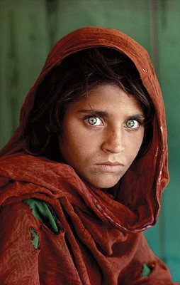

Afghan Girl
Steve McCurry · December 1984 · Colour photograph (Kodachrome 64 slide film)
In copyright. Look and learn: shown for study, not for download.
Sharbat Gula was about twelve and a pupil in an informal school at the Nasir Bagh refugee camp near Peshawar when Steve McCurry photographed her in December 1984, on Kodachrome 64 with a Nikon FM2 and a 105 mm lens. He did not write down her name. The picture was on the cover of National Geographic in June 1985. A team found her in Afghanistan in 2002, confirmed her identity by iris recognition, and showed her the photograph, which she had never seen. In a 2002 interview she said it had been taken and published without her consent.